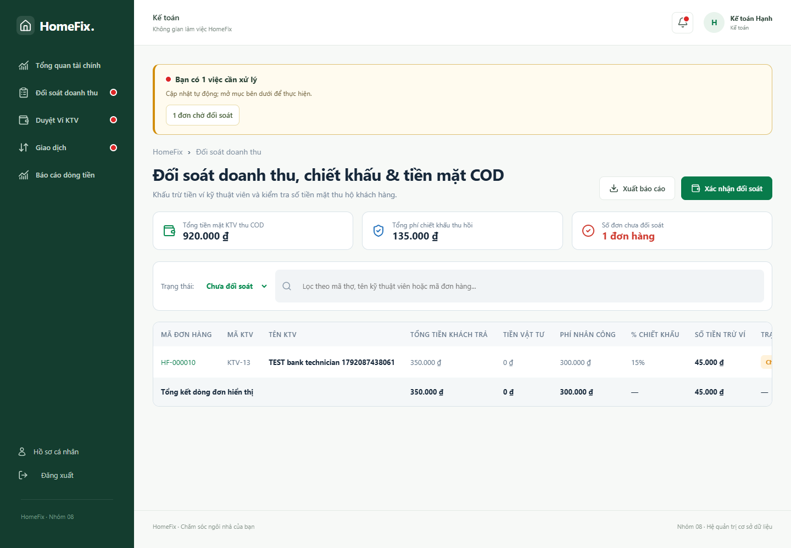

Kế toán: chuyển khoản, đối soát và ví
Xác minh giao dịch ngân hàng
- Mở Tài chính/Giao dịch, chọn yêu cầu chờ xác minh.
- Đối chiếu số tiền, nội dung, người gửi và chứng từ với nguồn tiền thực nhận. Ảnh chuyển khoản riêng lẻ chưa phải bằng chứng tiền đã vào tài khoản.
- Xác nhận khi phù hợp hoặc từ chối kèm lý do; theo dõi trạng thái cập nhật.
Đối soát doanh thu
- Tìm đúng mã đơn hoặc mã đối soát, kiểm tra phương thức COD/BANK và số tiền.
- Chọn Đối soát, đọc thông tin hoa hồng và xác nhận xử lý.
- Kiểm tra kết quả Đã đối soát và biến động ví tương ứng. Nếu báo dữ liệu cũ, tải lại; không duyệt lại cùng chứng từ.
Duyệt ví
- Mở Duyệt Ví KTV và chọn yêu cầu nạp/rút còn chờ.
- Đối chiếu chứng từ, tài khoản, số tiền và điều kiện số dư.
- Duyệt hoặc từ chối kèm lý do theo biểu mẫu. Kiểm tra trạng thái và sổ ví sau xử lý.


Màn hình tài chính — bấm ảnh để xem kích thước gốc.
Báo cáo giá trị đã thanh toán là tổng tiền giao dịch; hoa hồng đã đối soát là khoản thuộc nền tảng. Không dùng một tỷ lệ cố định nhân toàn bộ khoản thu để gọi là lợi nhuận ròng.